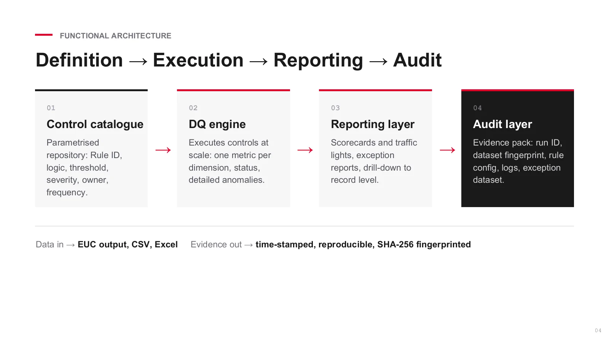
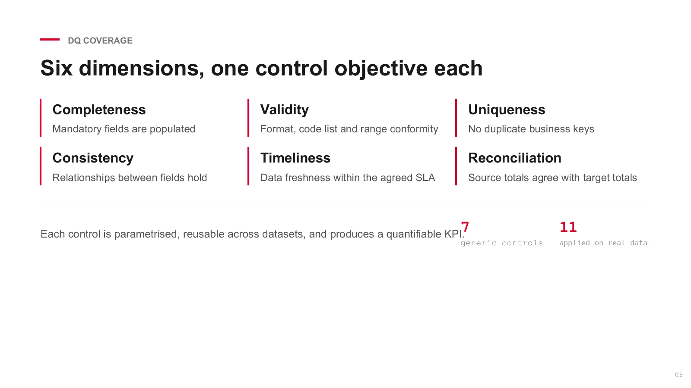
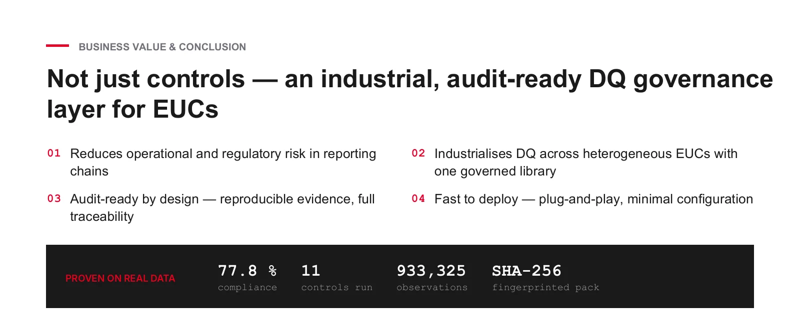

// Projet
DQ Compass
Projet d'équipe, développé en vibe coding
observations contrôlées
contrôles appliqués
7 contrôles en 5,3 s
preuve d'audit horodatée
Contexte
Dans une banque, de nombreux flux critiques passent par des outils EUC (Excel, CSV, Alteryx, low-code) sans contrôle qualité standardisé.
Résultat : chaque processus réinvente ses vérifications, les transformations sont difficiles à relier aux données d'entrée, et l'efficacité des contrôles ne peut pas être démontrée aux auditeurs.
Démarche
- Séparer ce qu'on contrôle de la façon dont on l'exécute : un contrôle générique est défini une fois, puis appliqué à une colonne avec ses paramètres. La logique centrale n'est jamais réécrite pour un nouveau cas.
- Six dimensions couvertes : complétude, validité, unicité, cohérence, fraîcheur, réconciliation. Le catalogue inclut aussi la loi de Benford, les outliers par écart interquartile, les formats par expression régulière et les plages de dates.
- Moteur écrit directement en Python / pandas : Great Expectations a été écarté pour garder un contrôle précis sur ce qui est compté et exclu.
- Lecture multi-sources : CSV, Excel, Parquet, tableaux dans un PDF, API.
- Organisation sur une journée : contrat d'interface front / back gelé à 10 h, « une personne, un fichier », une branche Git par tâche, deux recettes complètes (jeu de test puis vrai jeu).
Architecture fonctionnelle
Démonstration de bout en bout sur le jeu public de la BRI sur le marché des changes : définir, exécuter, restituer, auditer.
En images






Cliquez sur une image pour l'agrandir.
Résultats
- 11 contrôles appliqués sur 933 325 observations, avec un taux de conformité de 77,8 %.
- Test de charge : 5 millions de lignes et 7 contrôles en 5,3 secondes.
- Pack de preuves téléchargeable, horodaté et signé par empreinte SHA-256.
Ce que j'en retiens
- Limites identifiées par l'équipe elle-même : plafond autour de 8 à 10 millions de lignes sur un poste standard (la mémoire, pas le calcul), pas d'authentification, pas de séparation des rôles entre créateur et valideur, preuve stockée en JSON local plutôt qu'en stockage immuable.
Rapport et code
Pas de rapport public pour ce projet. Je le présente volontiers à l'oral.
Tous mes dépôts : github.com/payebie
Projet d'équipe. Le code est dans un dépôt partagé de l'équipe ; il sera publié sur mon GitHub avec l'accord des coéquipiers.